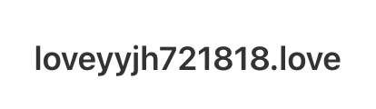

亲爱的谢宇洋 / 心有余 / 我最最最爱的老婆大人：
展信佳，
在信件开始前，想先跟老婆聊聊这个网页的基本信息吧～
这是我为老婆做的网页的第一版本，也就是确定好网页的域名
(可以大概理解成网址🤔)
网页名
(也就是老婆在标签页看到的名字😉)
还有这些乱七八糟的文案内容啦。
对了，目前网页的域名还不是正式的喔！属于是一个开发阶段的随机名称。
正式的域名当然是已经注册好了，因为想着老婆在国内能用，所以是用的国内的服务器。
是在腾讯云里购买的一个私人域名，很安全的啦，老婆放心～

(怎么样呢～这个域名老婆喜欢吗😋?
目前老婆还不能用这个网址进入我给老婆做的网页喔，还在过实名信息验证来着<类似于备案??>)
这也是我在老婆的生日这一天想送出的一份算是很有纪念意义的礼物。
(至少我自以为是这样的嗷，嘿嘿；当然它目前还处于很基础的阶段,算是测试页面啦😉)
因为制作网页本身所需要耗费的时间就不少，更何况在打算落实想法的时候时间已经不太够啦。
但想告诉老婆的是，我想把每一个细节都做到我心里满意的样子，再送给老婆。好吗？再给我一点时间啦～
这是陪老婆度过的第一个生日，在听到老婆说自己生日当天还要继续忙着上课时，第一反应很难不是心疼。
但在一瞬间也忽然意识到自己和老婆都迈向了生活的下一阶段。
很被动地、很猝不及防地
(虽然我和老婆都知道总会有这么一天)
就和老婆开启了异国。
我在距离老婆10000公里远的加州念书，老婆在距离我10000公里远的杭州工作。
加州的夏季每天都有数不尽的阳光，杭州的六七月总是阴晴不定。
我总向老婆留言我略无聊的重复日常，老婆也难免会在工作之余与我吐槽解压。
时间就这样不知不觉地流走，裹挟着无言的陪伴与思念、难言的幸福与寂寞。
我对老婆的爱有时沾满了我幼稚的心酸不安。
或许是还没有来得及跟上老婆的脚步？焦虑地总是向老婆解释、总是确定老婆的感受。
但回答我的永远老婆无尽的安慰与鼓励。
我想我当然会学会放下这些不安，学会更好地爱爱我的人，尽管有些许笨拙吧。
今天是老婆的第22个生日，是我缺席了22年后，陪伴老婆度过的第一个生日。
我想我不会忘记这个日子，不管是7月21日还是2025年的7月21日。
生日快乐，我的老婆。我很想你。
希望我最爱的老婆能够永远开心，永远快乐。
永远爱你的🦁
美西时间 2025年7月20日